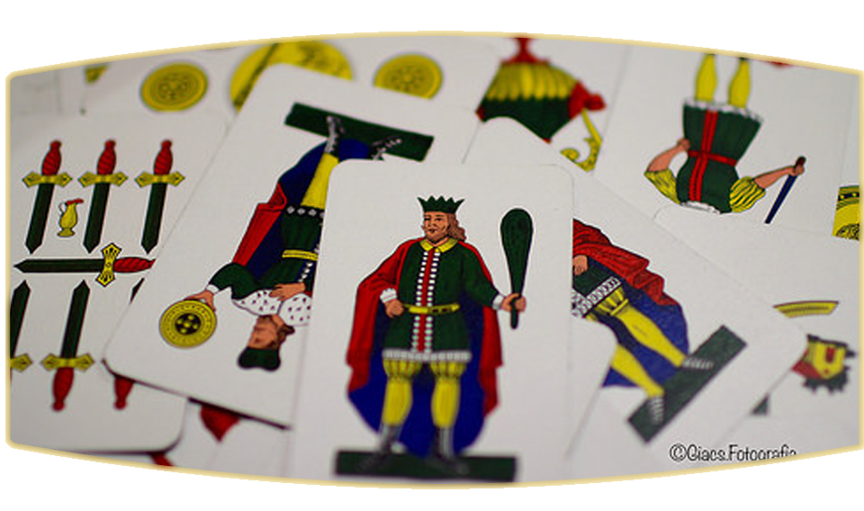

Briscola History
Briscola is one of Italy's most popular games. It is the Mediterranean trick-takling card game for two to six players played with standard Italian 40-card deck.
The game is most popularly played in Italy, Croatia, Montenegro, Maltese and Slovene.
Apart from the Northern Mediterranean, the game is also popular in Puerto Rico.
It is considered to be an elaboration from an original Dutch card game related to klaviaas (socalled sailors). In a Dutch version of the game players need to follow suit, but ours briscola rules allow any card to be played which makes the game a bit more unpredictable. The game can also be played with a modern Anglo-French deck, excluding the eights, nines and tens.
The four- and six-player versions of the game are played as a partnership game of two teams, with players seated such that every player is adjacent to two opponents.
A deck of Italian cards consists of forty cards, divided into four suits: Denari, Spade, Coppe and Bastoni. The values on the cards range numerically from one through seven, plus three face cards in each suit: Fante, Cavallo (or Knight) and King.
Below is a table identifying card rank and point values. Unlisted cards have no point value, and are ranked in descending ordinal value, from seven to two. Note however the odd ranking of the three.
A deck of Italian cards consists of forty cards, divided into four suits: Denari, Spade, Coppe and Bastoni. The values on the cards range numerically from one through seven, plus three face cards in each suit: Fante, Cavallo (or Knight) and King.
- A Fante is a lone human figure standing.
- The Cavallo is a human figure riding a horse.
- The King is a human figure wearing a crown.
- Cards can be seen here
Below is a table identifying card rank and point values. Unlisted cards have no point value, and are ranked in descending ordinal value, from seven to two. Note however the odd ranking of the three.
| Cards, by rank | Point value |
|---|---|
| Ace (Asso) | 11 |
| Three (3) (Tre) | 10 |
| King (Re) | 4 |
| Knight (or Horse) (Cavallo) for Spanish type cards, Woman (or Queen) (Donna) for French (international) style cards. | 3 |
| Jack (Fante) | 2 |